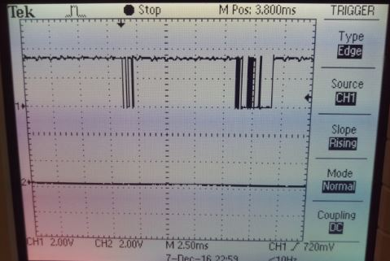

A wireless robot that you can control using a specialized glove!
Find Out More!Our initial objective was to build an immersive experience for users. We had tossed around ideas of using cameras, or microphone to allow users to interact with a robot. There were several previous projects which utilized flex sensors. Inspired by them, we decided to use flex sensors for the project. It allows for an immersive experience while making it a reasonable project for the limited time we had to build it.
The project can be logical separated into two different components: the glove and the car. The glove is the main way the user will interact with the car. Several fingers on the glove are outfitted with flex sensors to capture events when the user curls or uncurls figers. There are a combination of motions the user can perform with the glove to make the car move in a certain direction. Figure 1 below shows the commands associated with each glove command. The values from the flex sensor are sent to the microcontroller to deciper user commands. The microcontroller then transmists the commands to the car via Bluetooth.
The car receives user commands via Bluetooth. The microcontroller then moves the car in the appropriate direction while also making sure not to hit an object. It uses an ultrasonic sensor to detect when an obstacle is in the path. If it detects that there is an obstacle in the path that the user wants it to go in, then it will stop until either the path is clear or the user chooses a different direction that is free of an obstacle.
The only component that required math in this project was the ultrasonic. Unfortunately, we did not use it for our demo because it was not completely tested yet and caused the robot to randomly stop. However we beleive our understanding of converting the ECHO signal into a distance is correct, which is what we describe in this section. The microcontroller will find the total length of the ECHO signal. The length of the ECHO signal is the time it takes for ultrasound to move from the ultrasonic sensor to the object and back to the ultrasonic. Therefore, we need to divide the distance by 2. The speed of sound is 340 meters per second. Thus we use the following equation to find the distance to the object by only finding the time of the ECHO signal. The length of the ECHO signal is given in number of clock ticks. The clock period is 25ns.
There were many tradeoffs which we had to consider for each component of the design. However, the primary concerns were about staying within the $100 budget while also making sure we could finish it successfully in the given time frame.
Our goal was to wirelessly transmit data between the glove and the car. An infrared emitter would have been sufficient if we only wanted to send command data from the glvoe to the car. However, we were unsure in the beginning if we wanted two-way communication between the components to allow for a more sophisticated interaction. The IR emitter and receiver also had a short range compared to Bluetooth so we decided to go with Bluetooth. We wanted the user to have a long range to control the car for better usability. Although the infrared solution would have been cheaper, we believed the long range of Bluetooth outweighted the cost associated with it.
There were two options to think about when considering how the car should handle collisions. One way was to let it hit the obstacts and if it hits something then it will stop. The second way was to detect an obstacle in advance using ultrasonic range finder and stop the car even before it hits the obstacles. The first method would have been more cost efficient and would have required us to build a more sturdy chassis. However, we opted to go for the ultrasonic sensors because of the learning experience. It was an oppourtinity to make our design more user friendly while giving us more training in programming microcontrollers with different sensors. It is also much better for the chassis if it did not hit any obstacle.
The main standard for this project relates to wireless communication. We follow IEEE 802.15.1 standard for Bluetooth communication.
There are many patents and copyrights for robots that connect wirelessly to devices. However our method of connecting via Bluetooth between two PIC32 microcontroller, to our knowledge has not been patented.
We followed the IEEE code of ethics when thinking of both the implementation and design of our project. Safety was the biggest consideration when design our system, namely when constructing our power systems. We used relatively low voltage so that the system was not too dangerous to start out with. Switches were put in place so that we could safely remove power from our system to change out batteries, components, or work on hardware. When we were soldering we used proper safety gear, namely goggles, and properly operated our irons so as not to damage components or injure people. We avoided messy wiring that could lead to problems when plugging in different wires or even debugging.
Finally, we created this robot for both our class and our own technical development so that we could grow as engineers. We value any critiques or comments on our work to help make us better engineers. The interaction with course staff helped us improve our coding etiquette and helped point out possible problems with our idea or implementation. We hope that showing our work online others too can learn from our work, from our successes and failures, to help on their own project down the road.
In order to communicate between the glove and the robot we utilized two HC-05 Bluetooth modules to wirelessly transmit data. The modules interact with each PIC over UART and will transmit wirelessly transmit one way, with the glove Bluetooth module being configured as a master while the robot’s Bluetooth module being configured as the slave. Each module will be configured to pair with any available Bluetooth module to make it easy to establish a connection. The state output on each module indicates whether or not the module is connected, this info will be relayed to the PIC so that if a connection is interrupted then the robot will stop so as not to be driving without control.
Data Format
Data being transmitted between the PICs will consist of commands that are used to control the robot, which means each transmission will consist of an individual character. These characters are:
‘s’ - stop
‘f’ - move forward
‘b’ - move backward
‘l’ - turn left
‘r’ - turn right
These are determined as discussed in the flex sensor section. This configuration allows for the control on the robot end to be simple, it simply interprets the character that was received from bluetooth module and enacts the appropriate movement.
Configuration Command Sets and Pairing
Initial configuration of the Bluetooth modules is done utilizing the USB to UART converters available within the 4760 lab. The HC-05 modules utilize AT Commands in order to set different parameters, such as baud rate, slave/master role, and determining which devices it can pair with. The enable pin on the HC-05 module is set to high in order to put the module into AT command mode, which is done on our boards by connecting a jumper between 4.5 V power and the EN pin on the module. A PUTTY terminal can then be used to send the appropriate AT commands needed by the module to properly configure each individual module for its respective role. We wanted both modules to be set to a 9600 baud rate, which is standard for the PICs, and to be able to pair with any bluetooth device - this makes automatic pairing with the other HC-05 module easy. There is an option to establish a pairing with only a specific address, which in our case would have been the other HC-05 module. This setting however proved to be finicky and often difficult to connect, setting the default to connecting with any device made pairing with the other HC-05 module easy. Depending on the settings currently on the modules, your PuTTY terminal might have to be set to either have a 9600 or 38400 baud rate. 9600 is the rate we are configuring for, 38400 is the default baud rate The following command sets were used to configure each module:
For the master module
AT+ORGL - this sets the module back to its original factory settings. Note: after running this command it might be necessary to set the baud rate of your terminal to be 38400.
AT+CMODE=1 - this sets the module to connect to any device
AT+ROLE=1 - sets role as master
AT+BAUD=9600,0,0 - sets baud rate to 9600 with no parity and a 1 bit stop bit
For the slave module
AT+ORGL
AT+CMODE=1
AT+ROLE=0 - sets role as slave
AT+BAUD=9600,0,0
At this point the two modules should be ready to pair. Once complete remove the high logic being sent to the Enable pin and power cycle each module. When the modules are turned on, the master will attempt to establish a connection with the slave module and should do so within a few seconds of both modules turning on. You can determine whether or not a connection is established by looking at the output of the STATE pin of the module, which will be set to a high logic level when a connection is established, or by observing the LED that is on the module. When a connection is established, the red LED will blink twice quickly in succession while then turning off for a bit longer of a period of time than the blinks. Both modules should be exhibiting the same LED blinking pattern, if the LED of either module is blinking at a set period and not with two blinks in rapid succession, then a connection is not established.
Power and Hardware Requirements for Bluetooth
The HC-05 module alone runs on 3.3 V, however we purchased a module that included a breakout board with 6 pins to simplify the interface. The specs of the module we purchased allowed for an input voltage ranging from 3.3 to 6 Volts - it was designed to make the module easy to interface with an Arduino’s 5V supply.
We wanted to implement collision detection to avoid hitting any objects that might be in the path of the robot. The robot will stop as soon as it realizes that there is a nearby object, approximately 5 inches away, that is obstructing its path. In our demo, the ultrasonic did not function properly so we moved on with the demo without using the ultrasonic. The rest of the project works perfectly without the ultrasonic. Although we were unable to get the sensor working properly, we know that our understanding of it is correct which is explained in this section.
The ultrasonic distance measuring sensor HC-SR04 was used to detect when an object was nearby. The microcontroller would send a trigger signal to the ultrasonic sensor. The trigger is at least 1 millisecond long. After the trigger ends, the ultrasonic sensor will send out 8 bursts of ultrasound at 40kHz. The echo signal will then go high. The time that the echo signal is high is proportional to the distance to the object. The total period between the trigger is 60 milliseconds, so the distance date will be updated every 60 milliseconds.
The total distance traveled by the ultrasound is equivalent to the total time that the echo is high times the speed of sound 340meters per second. We divide this number by 2 to get the distance to the object because the sound travels from the sensor to the object and bounces back to the sensor. The formula shown in the background math section was implemented on the microcontroller to get the distance and it was changed to make the distance in terms of centimeters.
We used DC motors for the wheels of the robot. Our robot had two wheels and one caster ball to balance it in the front. We used the L293DNE H-bridge to attain bidirectional control of the motors. The robot was able to move forward, backward, left and right. The H-bridge is able to control two motors at once while providing the ability for bidirectional control. We knew that the motors would always be enabled so we connected both the enable signals to VDD. It helped reduce the number of pins we used on the microcontroller. PAdditionally the pins 4, 5, 12 and 13 were connected to ground. There were two signals from the microcontroller sent to each motor to control them. The schematic of this setup can be seen in the Appendix section. We setup both the motors according to the schematic shown in Figure 5 of the L293D datasheet.
The direction of the robot corresponded to different configurations of the two motors. If the user wants to move the robot forward then both the motors should move forward. Similarly, if the user wants to move the robot backward, then both the motors will move backwards. However if the robot needs to move to the right then the left motor will move forward while the right motor will move backward. This enables the robot to make a quick right turn. In a similar way, if the user wants to move the robot to the left then the right motor will move forward while the left motor will move backward. It is much better to turn both the wheels at once because it provides a better axis of rotation.
The motors used more power than expected and drained the battery after about an hour of extensive testing. We had a switch connected to the battery pack which helped to regulate the power to the motors. It made it easy to turn off the power to the motors when we were not testing it thereby increasing the time the batteries were used to do real work. We used 4AA batters for a total of 6V to power the motors. Anything lower than 5.4V resulted in one of the motors not functioning properly.
We separated the motor control functions into their own file motor.c and motor.h. It is good design to make abstractions and really helped when we were debugging other sensors. The motors were setup in main.c file but the motor.c file had the functions that would adjust PWM to provide correct robot movement. The methods in motor.c are conveniently named so they could be called by the main.c file for the appropriate user command.
Our initial thought was to use digital output pins from the microcontroller to control the motors. However, we decided to use PWM after reading over previous projects from ECE 4760. There were other projects that had used the same h-bridge and they did not get good results with only digital output pins. The motors would run at different speeds thus the robot could not properly drive in a straight line. PWM solves this problem thereby allowing the robot to drive in a straight line.
In order to enable a glove to control a robot, we used flex sensors taped to different fingers on the glove to get movement from each finger. These flex sensors act as variable resistors, the more the sensor bends, the higher the resistance of the sensor. The resistance of an unbent flex sensor was around 10 kΩ whereas a bent flex sensor got to around 33 kΩ. In order to get the reading of the sensor we created a simple voltage divider circuit using the setup
The voltage at the junction between the sensor and the 10 kΩ resistor was probed using a 330Ω resistor, which is used to prevent damage to the PIC’s pins, that was connected to an ADC on the PIC. As the flex sensor bends more, the value that the PIC sees goes down. The pins used on the PIC are able to connect to the PIC’s ADC.
Software Structure
In order to read from the three flex sensors we needed to enable scanning mode for the PIC’s ADC. Scan mode has the PIC constantly polling the ADC values at the pins specified in the configuration parameters. This allowed us to read from the three PIC pins that the sensors were connected to rapidly so that we would always have an updated value for each sensor. This is different than the “manual” mode, which only updates when requested and can only support readings from 2 ADC pins, compared to scan mode which supports every pin. We had one thread that was constantly reading from the ADC buffer and calculating which command should be sent over UART to the bluetooth module.
Control Scheme
The flex sensors we chose to act as triggers rather than having commands dependent on the specific reading of the sensor. This means that the value of the flex sensor needs to be below a certain threshold in order to be considered as bent, and the fact that it is bent or not is all that is being considered when determining the command for the robot. The raw values that we were reading from the sensors were not consistent enough to do something like regulate the speed of the motors, i.e. bending the sensors more makes the motors go faster. We wanted our control scheme to include 5 different commands; forward, backward, left, right, and stop. As a result we needed 3 flex sensors in order to have at least 5 different combinations of commands. We attached the three flex sensors to the glove’s index, ring, and pinkie fingers - three fingers we felt had enough independence to allow for 5 distinct gestures. The resulting control scheme came from the following gestures:
| Command | Control Scheme |
|---|---|
| Stop | All fingers extended |
| Forward | All fingers bent |
| Left | Index finger bent, ring and pinkie fingers extended |
| Right | Ring and pinkie fingers bent, index finger extended |
| Backward | Ring finger bent, index and pinkie finger extended |
The premise of our project was to make a mobile robot that is easy for a standalone user to control, as a result we needed a power supply that could move with both the robot and the controller. To accomplish this we ended up using a battery based system that used AA batteries as the power source. AA batteries are cheap and easy to purchase at a store which makes them very accessible compared to say LiPO or some other lithium based battery choices. One drawback however is we had to design our power systems around the cell voltage of the AA batteries which was 1.5 Volts. Battery packs are readily available that store 2, 3, and 4 batteries in one pack which connect these batteries in series, resulting in pack voltages of 3, 4.5, and 6 Volts.
Glove Power System
The main power draws on the glove system were the PIC, which runs on 3.3 V power, and HC-05 bluetooth module, which had an input range of 3.3 - 6V. To accommodate this we ended up using a battery pack that could store 3 AA batteries, resulting in a pack voltage of 4.5 V. In order to power the PIC and bias the flex sensors, we used a MCP1702 3.3 V regulator that provided a stable power supply.
During initial prototyping we had noticed that the HC-05 module could be powered off of the 3.3V output of the MicroStick we were using. As a result we attempted to use a pack with 2 AA batteries initially, however this did not provide sufficient power to the system, with all components turning off and on inconsistently.
Robot Power Systems
For the HC-05 module and PIC we replicated the power structure of the glove based system, using a 3 battery pack and 3.3 V regulator. However, to power the DC motors we needed a source of at least 5.4 V, as a result we added a 4 battery pack to provide 6 Volts to the motors. This was connected to the L293D H-Bridge which used signals from the PIC to regulate power to the motors.
We did not attempt isolation with our circuitry for the robot. However after repeated testing we did not see any serious side effects from the motors that we were using that would have jeopardized successful robot operation. The other power supplies were robust enough that input power to either the PIC or the HC-05 was never dropped low enough to turn off either system.
We were successfully able to demo a wireless robot that was controlled by hand gestures. Our flex sensors worked properly to figure out user commands. The data was then transmitted via Bluetooth to the robot. The robot would then decipher the commands and perform the appropriate movement. We had also wanted to include the ultrasonic on the final demo. However, due to lack of time, we were unable to extensively test it so the code we had for it still had a few errors. Because the errors were also hindering the rest of the robot's ability, we decided to not include the ultrasonic during our final demo.
In order to test our flex sensors properly we utilized a TFT screen to display the values which the PIC was reading from the sensors in the setup below . This gave us a sense of the magnitude of the values which the PIC was using and was instrumental in choosing the threshold which was used to determine if the flex sensor was bent in the eyes of the control scheme. An interesting problem we ran into though was choosing that threshold with different power supplies. Initially we had been using the Microstick 3.3 V output in order to power the sensors and choose the threshold. However when we changed to batteries, we noticed that we were getting a lot of incorrect triggers, the flex sensors were saying they were bent when in fact they weren’t. This was because of slightly different power levels being output by the batteries, the voltage was lower for the batteries compared to the Microstick, resulting in lower readings for the flex sensors. When we originally used only 2 batteries as well, we noticed that the values dropped over time as the batteries died. This was solved by using 3 batteries and a regulator to provide a relatively consistent 3.3 V power source for these sensors.
Flex sensor test setup
Testing and debugging the bluetooth modules turned out to be one of the biggest challenges of this project. Initial bluetooth testing was done using the below setup.
In this setup, the glove based system wirelessly connects to a separate bluetooth module, which is connected to a PuTTY terminal using a USB to UART converter. In order to test functionality of the bluetooth modules, the ADC values for the 3 flex sensors were streamed to the terminal as shown below, where a, b, and c represent different flex sensors. To accomplish this the following code was used in the thread intended to communicate with the bluetooth module
sprintf(PT_send_buffer, "a %d\r\n", adc_5);//Write to buffer // Transmit data over UART PT_SPAWN(pt, &pt_DMA_output, PT_DMA_PutSerialBuffer(&pt_DMA_output) ); // Wait for transmission to complete PT_YIELD_TIME_msec(50); // Repeat for other flex sensors sprintf(PT_send_buffer, "b %d\r\n", adc_9); PT_SPAWN(pt, &pt_DMA_output, PT_DMA_PutSerialBuffer(&pt_DMA_output) ); PT_YIELD_TIME_msec(50); sprintf(PT_send_buffer, "c %d\r\n", adc_11); PT_SPAWN(pt, &pt_DMA_output, PT_DMA_PutSerialBuffer(&pt_DMA_output) ); PT_YIELD_TIME_msec(50);
This indicated that transmission seemed to be working with the PIC. To then test receive functionality, code was loaded onto the PIC meant to parse a command, signified by the letter p, that was entered into the PuTTY terminal with a number to find and display that number on the TFT screen. A command, ‘p 10000’ was entered into the terminal and then wirelessly transmitted to the PIC where the number 10000 was successfully extracted from the buffer. The code used for this is shown below along with the PuTTY Inputs and the result on the TFT Screen:
PT_SPAWN(pt, &pt_input, PT_GetSerialBuffer(&pt_input) ); sscanf(PT_term_buffer, "%s %f", cmd, &value); if(cmd[0]=='p'){ RX_data = (int)value; }
Bluetooth testing using PuTTY
With these two tests it appeared that bluetooth was working and the PIC was transmitting and interpreting UART data properly. However when we tried interfacing two PIC’s rather than a PIC and a terminal that’s where we ran into issues.
PIC to PIC Communication
We noticed when we wirelessly connected the two PICs that it appeared that messages were not being transmitted properly, the robot would only see the first command that was sent and not respond to further input. This turned out to be the result of a few different issues.
Within the Protothreads header for the PT_GetSerialBuffer function there are times that the PIC tries to transmit a response over UART. This would create a busy UART channel and could possibly impact the system. To counter this we commented out within the header all mentions of:
PT_YIELD_UNTIL(pt, UARTTransmitterIsReady(UART2));
UARTSendDataByte(UART2, character);
Next we observed on the oscilloscope the serial commands that were being transmitted and noticed that it appeared the Bluetooth module was seemingly delaying the ‘\r’ return char by a short but random period of time:
Serial signal output from glove PIC going to transmit Bluetooth
UART Signal Received by robot PIC over bluetooth (NOTE the large delay)
The true error was discovered when running through the code in debug mode. We observed the value of PT_Term_Buffer, the char array being saved while PT_GetSerialBuffer was running and saw that this was properly updating with each change in command, however cmd - the parsing of PT_term_buffer - was not.The issue was that there was, for an unknown reason, a "\\0" appended to the front of PT_term_buffer, which is null and a terminator for a char array. As a result sscanf saw the end of PT_term_buffer and thus would not update cmd, resulting in no new commands being received. To solve this we simply referenced PT_term_buffer at index 1 in our code instead of the cmd variable. This resulted in the full functionality of our robot.
Debug output showing terminator at front of PT_term_buffer
PT_term_buffer updating but cmd not updating
We ran two major tests with our robot to stress the range of the bluetooth system, one in Phillips Hall and one in Duffield Hall
Phillips Hall Testing
In Phillips Hall we drove from the glass display cases where the user was stationed on the second floor to the campus road entrance of the building on the same floor. According to google maps that is roughly 160 feet. Throughout this test we had no issue communicating with the robot and it was just responsive down the hall as it was when right next to the user. The robot did have a little bit of difficulty going over a rug that was near the campus road doors as the caster wheel, which was at the front of the robot, had trouble overcoming the edge of the rug.
Video footage of the test can be seen below:
Duffield Hall Testing
To test the robot and range even more we moved into duffield hall. Here we had the controller stationed near the alcove at the connection hallway between Phillips and Duffield and the robot was controllable to the doors of Upson Hall, which was around 180 feet according to Google Maps.
Duffield posed a few more challenges to our robot though. The first of which was foot traffic, there were a lot of people moving around and standing between the robot and the user. There was one moment even when the user could not see the robot due to an individual blocking line of sight. Despite this the user was still able to control the robot, showing that direct line of sight isn’t necessary for communication. The second was with pairing, Duffield proved to be a difficult place for the two bluetooth modules to pair, likely due to the proximity of dozens of bluetooth devices in cell phones. There were one or two instances where a wire became loose and power was cut to one of the modules, the glove and robot systems had to be brought back in close proximity off in a hall in Phillips in order to repair with each other.
We were successfully able to create a robot that could be controlled remotely using a glove and drove it through Phillips and Duffield Hall. We tackled a variety of different technical challenges with this project including motor control, ADC reads, UART, and communicating wirelessly via Bluetooth, with the only uncompleted objective being obstacle avoidance using Ultrasonic.
There are a few ways we could improve our project, beyond just getting ultrasonic working. The glove controls were a little laggy largely due to the 500 millisecond delay in the transmit code, meaning commands only updated twice a second. Added responsiveness would make the robot easier to control and it might be as easy as just lowering that delay. The AA batteries we used as the power supply aren’t the longest lasting power supply, given more time and a larger budget it would have been wise to invest in a small LiPo battery for a smaller form factor and greater capacity. Mechanically we could also have oriented the controls so that the two larger wheels were in the front of the robot to better navigate obstacles like carpets and bumps than the caster wheel. Finally from a project management perspective, we could have organized our time and testing better to leave a few more days open for full systems tests. This could have given us more time to replace our whiteboards with soldered protoboards or even just had more peace of mind knowing we had a working design earlier.
The group approves this report for inclusion on the course website
Commented listing of program, schematics, cost details. Thanks to the work done by Medi-bot team which really helped us in make a good moving robot.
Glove schematic
Robot schematic
L293DNE H-Bridge https://cdn-shop.adafruit.com/datasheets/l293d.pdf
MCP1702 Regulator http://ww1.microchip.com/downloads/en/DeviceDoc/22008E.pdf
HC-Sr04 Ultrasonic Ranging Module http://www.micropik.com/PDF/HCSR04.pdf
ADC Tutorial http://umassamherstm5.org/tech-tutorials/pic32-tutorials/pic32mx220-tutorials/adc
Protothreads Library http://ww1.microchip.com/downloads/en/DeviceDoc/32bitPeripheralLibraryGuide.pdf
Bluetooth Communication http://eskimon.fr/wp-content/uploads/2014/10/commandes_AT_HC05.pdf
Website Template https://startbootstrap.com/template-overviews/creative/
| Part Name | Company Name | Part Number | Cost per unit | Number of units | Total cost of part |
|---|---|---|---|---|---|
| Flex Sensors | Sparkfun | SEN-10264 | 7.95 | 3 | 23.85 |
| Ball Caster (Pair) | Sparkfun | ROB-00320 | 5.95 | 0.5 | 2.98 |
| 4AA Battery holder | Adafruit | 830 | 2.95 | 1 | 2.95 |
| 3AA Battery holder | Digikey | BC3AAW-ND | 1.5 | 2 | 3 |
| Dual H-bridge L293D | Adafruit | 807 | 2.95 | 1 | 2.95 |
| Gloves: Timberland Mens | Amazon | B00WH4PGBK | 3.67 | 0.5 | 1.84 |
| DC Motors | Sparkfun | 13302 | 3.95 | 1 | 3.95 |
| Wheels (pair) | Sparkfun | 13259 | 2.95 | 1 | 2.95 |
| PIC32MX250F128B | Borrowed | Borrowed | 5 | 1 | 5 |
| Ultrasonic Sensor | Amazon | B01COSN706 | 1.90 | 1 | 1.90 |
| Bluetooth | Amazon | B01G9KSAF6 | 8.49 | 2 | 16.98 |
| Batteries | Costco | unavailable | 0.375 | 10 | 3.75 |
| Switch | Digikey | EG1903-ND | 0.58 | 2 | 1.16 |
| Protoboard | Borrowed | Borrowed | 1 | 2 | 2 |
| Used Large Protoboard | Borrowed | Borrowed | 1 | 1 | 1 |
| Microstick | Borrowed | Borrowed | 10 | 1 | 10 |
| Headers | Borrowed | Borrowed | 0.05 | 120 | 6 |
| Jumpers | Borrowed | Borrowed | 0.10 | 2 | 0.20 |
| 3.3V Linear Voltage Regulators | Adafruit | 2166 | 0.95 | 2 | 1.90 |
| Total | 94.33 |
Judy worked on the software for flex sensors, motor control and ultrasonic sensors. She worked primarily on the robot side by building boards, soldering circuits and building the chassis for the robot. She also built the website using Bootstrap and wrote content.
John worked on the software for flex sensors and Bluetooth communication. He built the glove to control the robot, which included soldering circuits and building boards. He also contributed to the content on the website.